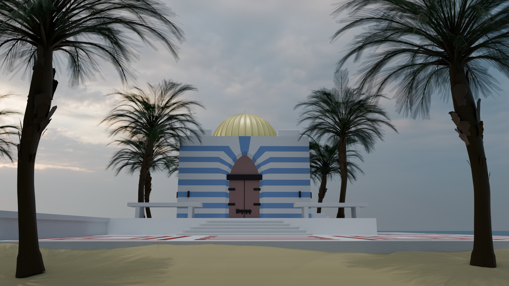
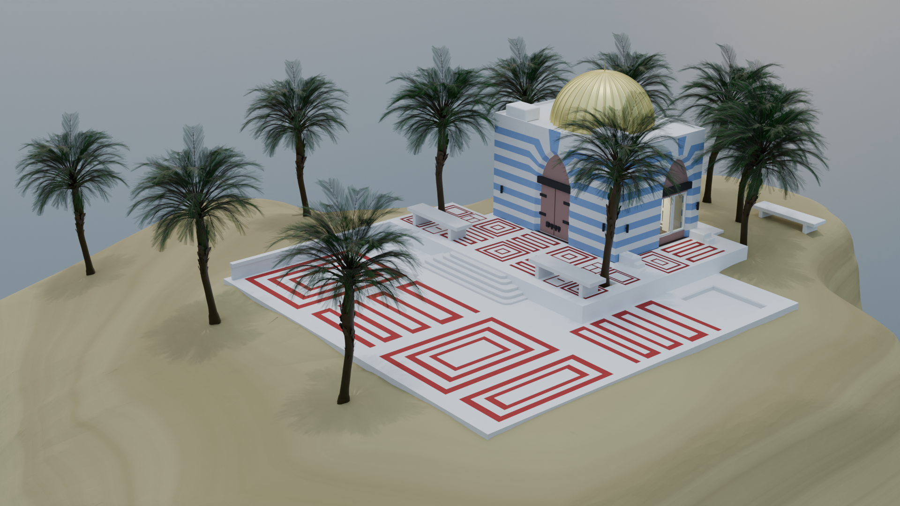
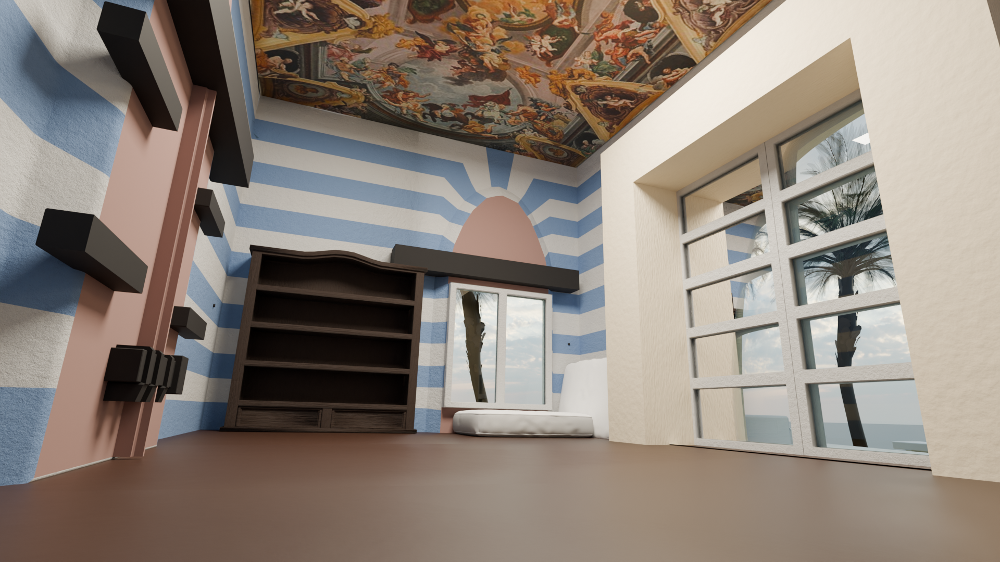
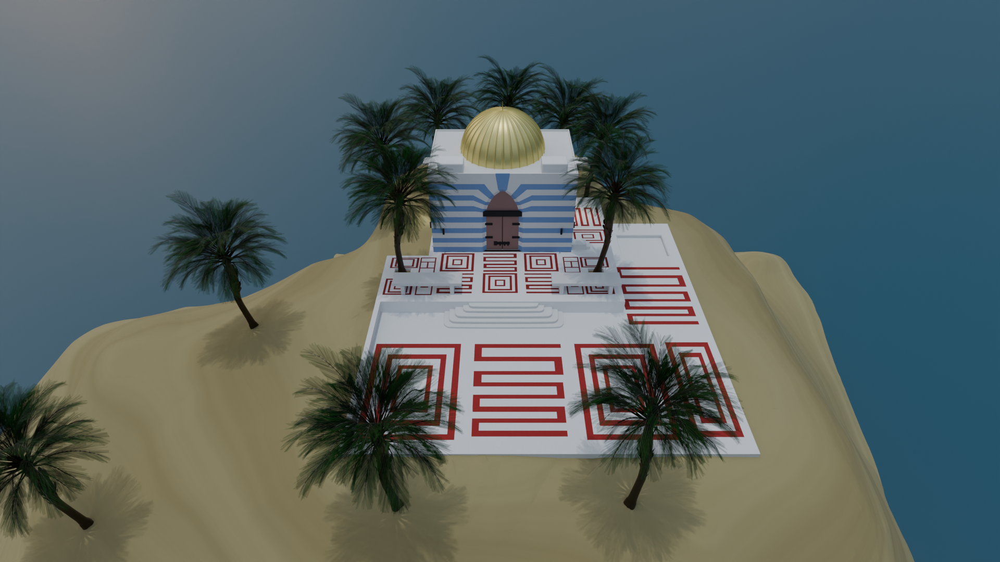
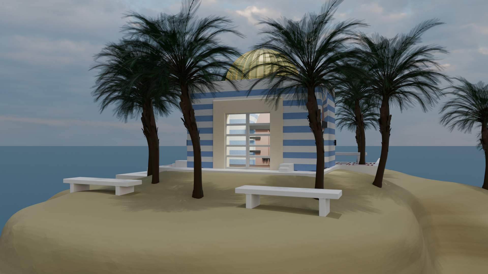

Maturitní práce · Střední škola Edvarda Beneše Břeclav · 2025/2026
Trojrozměrná vizualizace architektonické stavby v programu Blender 5.0.1
Cílem maturitní práce bylo vytvořit pomocí technologie trojrozměrného modelování architektonický model reálně existující stavby a provést jeho vizualizaci v programu Blender 5.0.1.
Práce se zabývá historií a funkcemi programu Blender, popisem použitých modelovacích technik a postupem vytváření jednotlivých částí modelu včetně interiéru a okolního prostředí.





Výchozí model byl importován ve formátu FBX do prostředí Blender 5.0.1 a připraven pro další úpravy.
Kolem budovy byl vytvořen terén, pobřežní oblast a okolní vegetace odpovídající reálné lokalitě.
Do interiéru budovy byly přidány vlastní prvky — podlaha, nábytek a osvětlení.
Scéna byla osvětlena pomocí HDRI obrazu. Finální vizualizace byla vyrendrována v enginu Cycles v rozlišení 1920×1080.
Kompletní dokumentace projektu zahrnující teoretický rozbor, postup práce a zhodnocení.